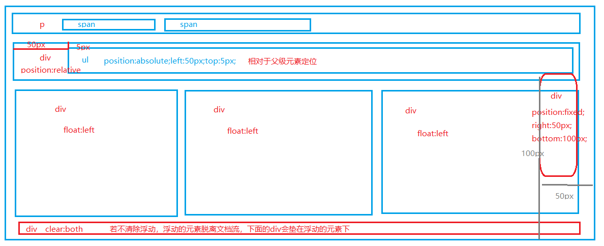
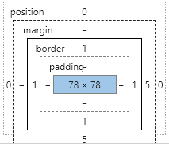
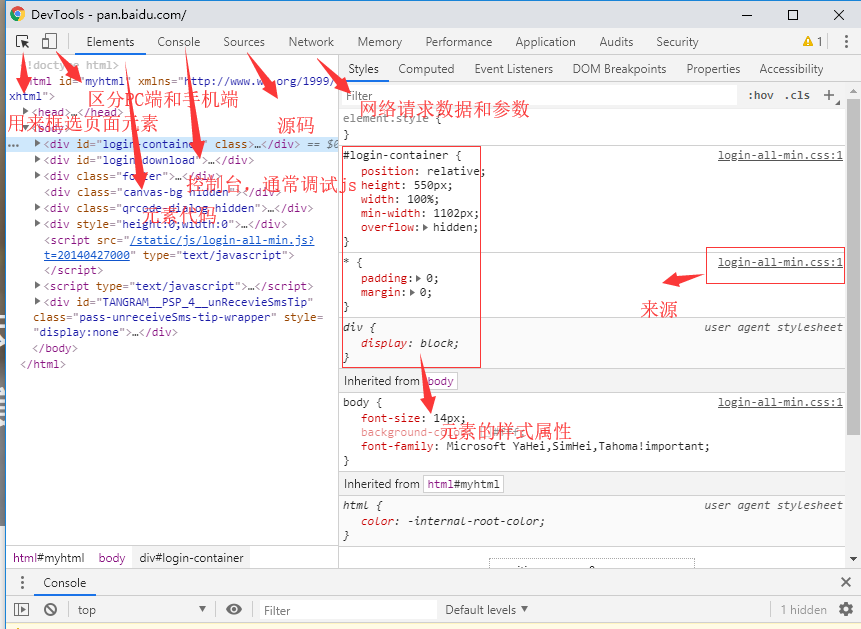
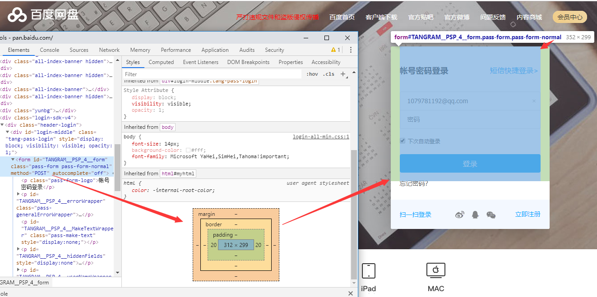

1、W3C标准
万维网联盟（外语缩写：W3C）标准不是某一个标准，而是一系列标准的集合。网页主要由三部分组成：结构（Structure）、表现（Presentation）和行为（Behavior）。万维网联盟创建于1994年，是Web技术领域最具权威和影响力的国际中立性技术标准机构。到目前为止，W3C已发布了200多项影响深远的Web技术标准及实施指南。 http://www.w3school.com.cn/
规范是一种态度
2、页面布局
2.1 布局元素
position定位：
display属性：
float浮动：
就像写作一样，文档流从上到下、从左到右排列元素。float 浮动(清除浮动下置div 属性clear:both)和绝对定位(position：absolute或position: fixed)会脱离文档流。不占用文档空间。
如下图，

通常情况下横向排列用float,相对元素固定位置用position：relative和position: absolute；悬浮于窗口图标用position:fixed。这样就愉快的完成页面的布局啦
2.2 元素的盒模型

盒模型油里到外分为 元素的width 和height区 、
padding（内边距）区域，padding:上 右 下 左
border (边界)， border:1px solid #ccc;
margin（外边距）区域，margin:上 右 下 左
布局元素结合margin and padding，就能够布出间距适中的页面咯🤗
3、浏览器页面调试
作为一名后端开发，曾有幸和一位前端妹纸合作，观其调试工作，后凡涉及前端领域皆自处而为，所学即所用，呜呼哀哉😂
调试一般选用google浏览器，适用于开发者的浏览器
F12出现DevTools

页面元素选择

通过元素选择来快捷查看元素的基本属性，可以事半功倍哟
我是飞奔的企鹅，
一只有梦想，有故事的企鹅，欢迎诉说你的故事